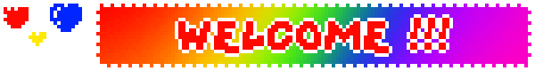

Mise à jour du Webmaster...
Dernière mise à jour: 14 Juin 2003
État du serveur: CRITIQUE
Bienvenue sur le site officiel du Parchaïque. Amusez-vous bien et n'oubliez pas d'aller saluer notre mascotte Eon. Nous espérons vous revoir très bientôt une fois que "l'incident" du roller coaster sera réglé.
N'hésitez pas à visiter la page de nos attractions ou à en apprendre plus sur notre personnel dévoué.
Parchaïque est un jeu vidéo développé en Python réunissant exploration, réflexes et compétition. Conçu dans le cadre du projet de première année à EPITA, il se démarque par une architecture hybride mêlant un monde semi-ouvert (Hub) et une série de mini-jeux.
Le Concept :
Le joueur est plongé dans un univers en vue de dessus (Top-Down) où il incarne un personnage parmi un panel aux personnalités variées. En explorant la carte, il peut interagir avec divers PNJs pour déclencher des défis. Le jeu propose une IA de foule donnant vie à l'environnement.
Modes de Jeu :
Mode Solo (Speedrun) : Le joueur doit explorer la carte et venir à bout de 4 mini-jeux uniques le plus rapidement possible pour établir le meilleur temps.
Mode Multijoueur (LAN) : Parchaïque brille par son mode réseau local (Client/Serveur TCP). Deux joueurs peuvent s'affronter en direct sur les mini-jeux, avec des mécaniques poussées (par exemple, dans l'Inspection Sanitaire, un joueur trie les éléments pendant que l'autre tente de saboter son écran).
Vous êtes le visiteur numéro:
Site optimisé pour Netscape Navigator 4.0 et Internet Explorer 5. Résolution 800x600.